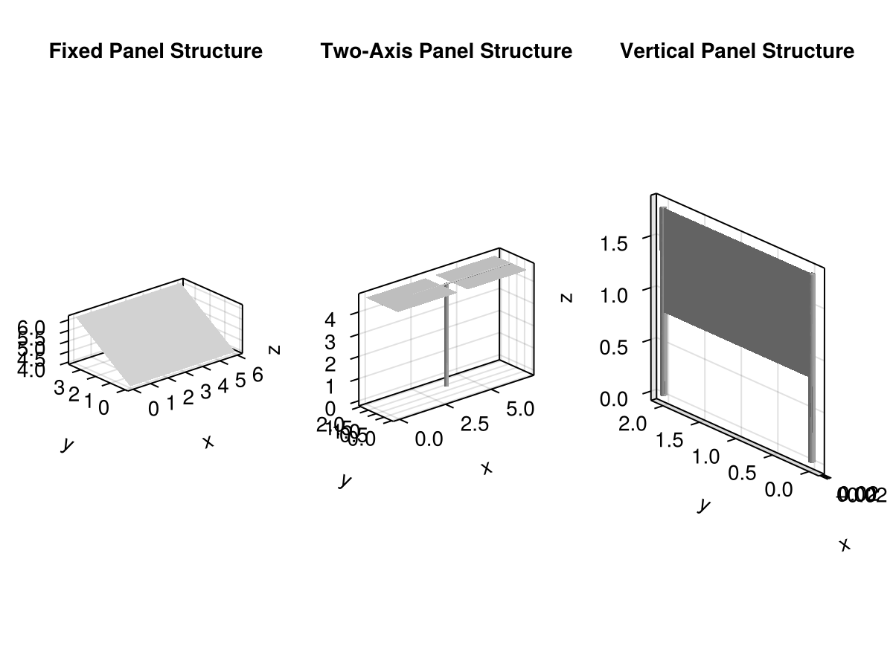

Agrivoltaics
This package provides tools for modeling and simulating agrivoltaic systems, which combine agriculture and solar energy production on the same land.
Its objective is to include functions for calculating the shading effects of solar panels on crops, as well as tools for optimizing the layout of solar panels to maximize both energy production and crop yield.
Installation
You can install the package using Julia's package manager. Open the Julia REPL and run:
using Pkg
Pkg.add("Agrivoltaics")Usage
After installing the package, you can start using it by importing it in your Julia code:
using AgrivoltaicsBuilding solar panel layouts
You can build different solar panel designs and layouts.
The package includes three different solar panel designs: Fixed, TwoAxis, and Vertical. Each design is parameteric, allowing you to specify the dimensions and properties of the solar panels.
# Example of creating a fixed solar panel design
fixed_panel = Fixed(panel_dimensions= (6.0,4.2), inclination=30.0)
# Example of creating a two-axis solar panel design
two_axis_panel = TwoAxis(module_dimensions=(7.0, 2.0), tracking_angle=0.0)
# Example of creating a vertical solar panel design
vertical_panel = Vertical(panel_dimensions=(1.0, 2.0), npanels_stacked=1)Vertical{Float64}([0.0, 0.0, 0.0], (1.0, 2.0), (0.8, 0.03), 1, Mesh{3, Float64, GeometryBasics.TriangleFace{Int64}}(...), Mesh{3, Float64, GeometryBasics.NgonFace{3, GeometryBasics.OffsetInteger{-1, UInt32}}}(...))Then you can instantiate the structure of the solar panel design, which will create the meshes for the panels and supports.
fixed_structure = structure(fixed_panel)
two_axis_structure = structure(two_axis_panel)
vertical_structure = structure(vertical_panel)/ 1: VerticalModule
├─ + 2: SupportLeft
├─ + 3: SupportRight
└─ + 4: Panel
You can visualize the panels using plantviz from the PlantGeom package, along with any Makie backend.
using PlantGeom
using CairoMakie
f = Figure()
ax = Axis3(f[1, 1], title="Fixed Panel Structure", aspect=:data)
plantviz!(ax, fixed_structure)
ax2 = Axis3(f[1, 2], title="Two-Axis Panel Structure", aspect=:data)
plantviz!(ax2, two_axis_structure)
ax3 = Axis3(f[1, 3], title="Vertical Panel Structure", aspect=:data)
plantviz!(ax3, vertical_structure)
f